Warg
Warg · 5 new skills on Project4
Direct StrikeNew
Attacks the target.
Deals P. damage. Power 1800.
Ignores Shield Defense.
Ignores 15% of the target's defense.
Requires a fist weapon.
Deals P. damage. Power 1800.
Ignores Shield Defense.
Ignores 15% of the target's defense.
Requires a fist weapon.
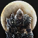
Feral RampageNew
PvE only. Tears into the target and nearby monsters. Power 875.
Requires a fist weapon.
Requires a fist weapon.
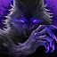
Imminent PiercingNew
Gathers all might to pierce the target.
Deals P. damage. Power 10000.
Ignores Shield Defense.
Ignores 30% of the target's defense.
Requires a fist weapon. Consumes 10 Spirit Ore.
Deals P. damage. Power 10000.
Ignores Shield Defense.
Ignores 30% of the target's defense.
Requires a fist weapon. Consumes 10 Spirit Ore.
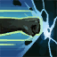
Powerful FistsNew
Makes powerful blows at the target.
Deals P. damage. Power 4000.
Ignores Shield Defense.
Ignores 25% of the target's defense.
Requires a fist weapon. Consumes 1 Spirit Ore.
Deals P. damage. Power 4000.
Ignores Shield Defense.
Ignores 25% of the target's defense.
Requires a fist weapon. Consumes 1 Spirit Ore.
Upward StrikeNew
Attacks the target with an uppercut.
Deals P. damage. Power 6600.
Ignores Shield Defense.
Ignores 15% of the target's defense.
Requires a fist weapon.
Deals P. damage. Power 6600.
Ignores Shield Defense.
Ignores 15% of the target's defense.
Requires a fist weapon.
Claw Storm (Instinct)Lv. 6
Uses powerful claws to attack up to 10 enemies at the same time.
<font color="ECECEC"><Physical Instinct></font>
You can activate 1 Physical Instinct.
Requires a fist weapon.
<font color="ECECEC"><Physical Instinct></font>
You can activate 1 Physical Instinct.
Requires a fist weapon.
Enhanced Mark (Instinct)Lv. 6
Warg zeroes in on his target. On a basic attack, deals additional damage equal to 40% of your P. Atk. and applies an enhanced Warg's Mark (received damage +8%).
<font color="ECECEC"><Hidden Instinct></font>
You can activate 1 Hidden Instinct.
Requires a fist weapon.
<font color="ECECEC"><Hidden Instinct></font>
You can activate 1 Hidden Instinct.
Requires a fist weapon.
Enormous Wolf UpgradeLv. 2
For 30 sec., P. Atk. +10%, Critical Rate and Critical Damage for basic attacks +20%, P. Accuracy +50. Requires a fist weapon.
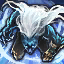
Instinct DashLv. 2
Jumps to the target stunning them for 3 sec. Makes a basic attack dealing additional damage equal to 100% of P. Atk. Skill cooldown is fixed.
<font color="ECECEC"><Prerequisite></font>
The Moon Jump Instinct is enabled.
Base success rate: 70%
Attack type: Stun
<font color="ECECEC"><Prerequisite></font>
The Moon Jump Instinct is enabled.
Base success rate: 70%
Attack type: Stun
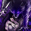
Intimidating CryLv. 3
A furious cry suppresses surrounding enemies, cancelling their targets and preventing them from choosing new ones for 5 sec. Requires a fist weapon.
Base success rate: 60%
Attack type: Confusion
Base success rate: 60%
Attack type: Confusion
Jump AttackLv. 19
Makes a jump attacking the target and nearby enemies and dealing damage equal to 95% of P. Atk. For 5 sec., Speed -180.
Requires a sword, a blunt weapon, a spear, a fist weapon, dual blunt weapons, or dual swords.
Base success rate: 60%
Attack type: Slow (Physical)
Requires a sword, a blunt weapon, a spear, a fist weapon, dual blunt weapons, or dual swords.
Base success rate: 60%
Attack type: Slow (Physical)
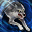
Moon Agility
Swiftly moves for 300 units forward.
Moon Jump (Instinct)
Nothing can stop Warg when he senses his prey. During automated hunting, lets you use Instinct Dash to jump up to the target that is a certain distance away.
<font color="ECECEC"><Hidden Instinct></font>
You can activate 1 Hidden Instinct.
Requires a fist weapon.
<font color="ECECEC"><Hidden Instinct></font>
You can activate 1 Hidden Instinct.
Requires a fist weapon.
Relax
While sitting, recovers HP, MP and CP quickly. Can not be used in combat. Consumes 10 Relax Holy Water.
Shape Change
Changes Warg's appearance.
When activated, shows the Human appearance and default equipment.
When deactivated, Warg's appearance is displayed as is.
When activated, shows the Human appearance and default equipment.
When deactivated, Warg's appearance is displayed as is.
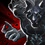
Smell of Blood (Instinct)Lv. 6
Warg's animal nature takes over. Restores 7% HP when killing an enemy.
Cooldown is fixed at 3 sec.
<font color="ECECEC"><Hidden Instinct></font>
You can activate 1 Hidden Instinct.
Requires a fist weapon.
Cooldown is fixed at 3 sec.
<font color="ECECEC"><Hidden Instinct></font>
You can activate 1 Hidden Instinct.
Requires a fist weapon.
Violent Storm (Instinct)Lv. 6
Warg's unleashed power crushes enemies. On a basic attack, deals additional damage equal to 50% of P. Atk. to nearby enemies.
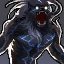
Warg's Energy SurgeLv. 3
Wolf's body blocks all damage. For 10 sec., makes you immune to debuffs and your HP don’t drop below 1. When the effect expires, restores 40% HP.
Requires a fist weapon.
<font color="ECECEC">Type: Immortality.</font>
HP do not decrease below 1.
Doesn't stack.
Consumes 15 Soulstones.
Requires a fist weapon.
<font color="ECECEC">Type: Immortality.</font>
HP do not decrease below 1.
Doesn't stack.
Consumes 15 Soulstones.
Warg's HowlingLv. 3
Awakens wolf blood that is concealed deep inside. Removes all debuffs, and for 5 sec. increases Debilitation/ Confusion/ Obstruction/ Stupor/ Infection/ Petrification/ Pull/ Danger Zone Resistance by 300.
Requires a fist weapon.
Consumes 3 Soulstones.
Requires a fist weapon.
Consumes 3 Soulstones.
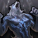
Warg's Instinct PowerLv. 6
For 30 sec., P. Atk. +20%, Basic Attack Power +20%, P. Accuracy +20, Critical Rate for basic attacks +20%. Requires a fist weapon.
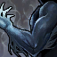
Warg's Red AlertLv. 6
For 30 min., P. Atk. +15%, P./ M. Def. +10%. Requires a fist weapon.
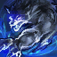
Wolf Strike (Instinct)
Ferocious Warg only needs one hit to strike down the target. On a basic attack, with an 8% chance deals additional damage equal to 300% of your P. Atk.
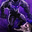
Wolf TrapLv. 3
Scares the prey stunning it for 7 sec. Requires a fist weapon.
Base success rate: 70%
Attack type: Stun
Base success rate: 70%
Attack type: Stun
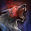
Wolf Zone (Instinct)Lv. 6
Warg's keen sense of smell easily leads him to his prey. Periodically applies Warg's Mark to surrounding targets. The area of effect is increased with skill level.
<font color="ECECEC"><Hidden Instinct></font>
You can activate 1 Hidden Instinct.
Requires a fist weapon.
<font color="ECECEC"><Hidden Instinct></font>
You can activate 1 Hidden Instinct.
Requires a fist weapon.
Accuracy BonusLv. 7
Increases P./ M. Accuracy.
Awakening of Hidden PowerLv. 5
Unleashes the power of the wolf. P. Atk. +5%, P. Def. +10%, Attribute Attack +20, Attribute Resistance +20, P. Accuracy up to +10, STR +5. Activates Transient Instinct that increases P. Atk. for a short time after being hit.
Divine Expansion
Buff slots +1.
Divine InspirationLv. 6
Buff slots +1.
Masia's ShieldLv. 5
Through Masia's Shield's protection, received damage -10%.
Predator's Instinct Power
On basic attack, applies Warg's Mark to the target.
Warg's Mark: for 7 sec., received damage +8%.
Warg's Mark: for 7 sec., received damage +8%.
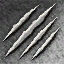
Warg Power
Critical Rate for basic attacks +1%
Warg's Defense MasteryLv. 4
When the sigil is equipped, P. Atk. +3%, Critical Damage for basic attacks +3%.
Warg's Fist Weapon MasteryLv. 8
When using a fist weapon, P. Atk. up to +15%, Atk. Spd. +10%, Critical Rate for basic attacks up to +10, Critical Damage for basic attacks up to +10%.
Warg's Glory
You feel the elite Warg's noble power.
Basic Attack Power +5%, P./ M. Def. +5%.
Basic Attack Power +5%, P./ M. Def. +5%.
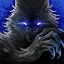
Warg's Heavy Armor MasteryLv. 8
When using heavy armor, Max HP +15%, P. Def. +10%, received Critical Damage from basic attacks -35%. Additionally, STR +2, Dagger/ Bow Resistance +10%, skill cooldown -10%.
Werewolf's AwakeningLv. 3
Thanks to the innate power of the wolf, Speed +20, Critical Rate for basic attacks +5%, Critical Damage for basic attacks +5%.